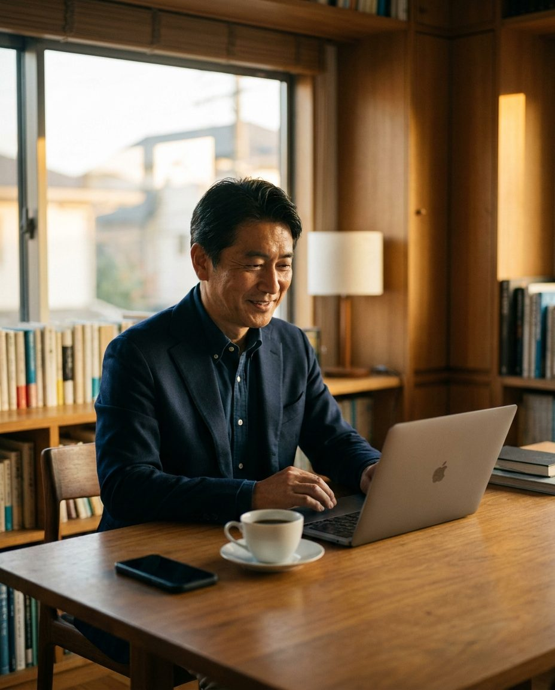
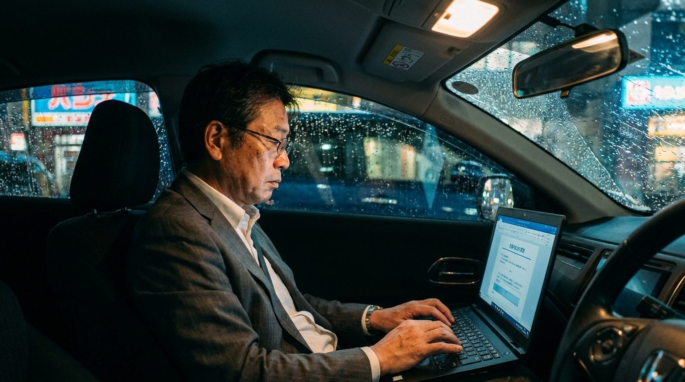
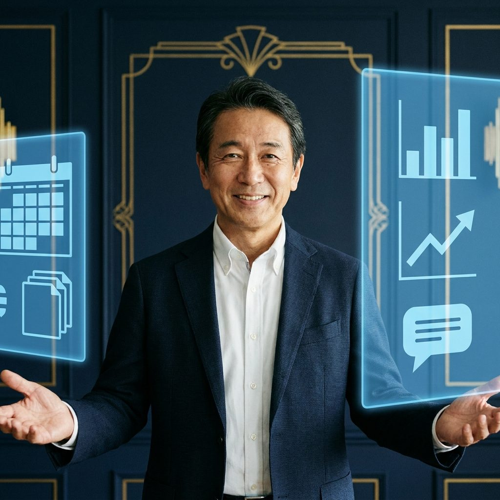
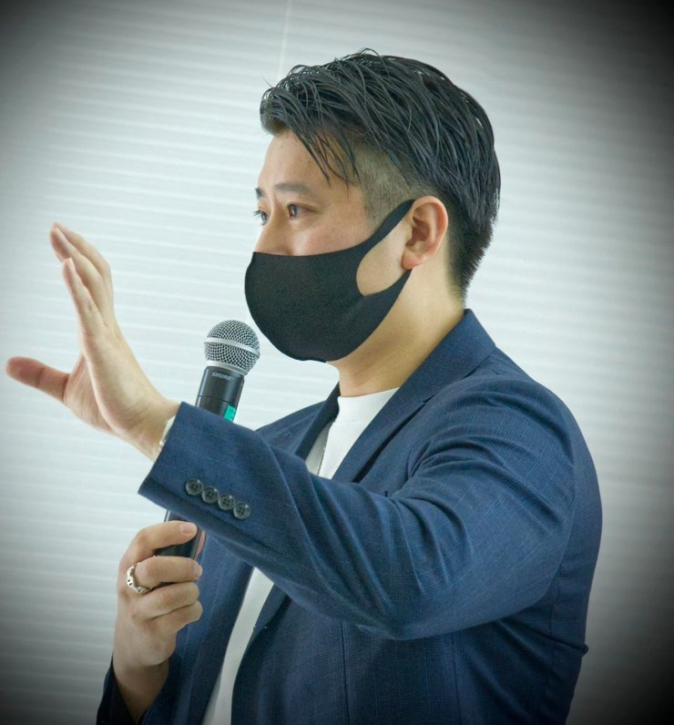

移動ゼロ。集客も、提案も、フォローも、AIの右腕と左腕が回す。
パソコンが苦手でも組み立てられる仕組みを、90分、目の前で動かして見せます。
90分で終わります。カメラオフ・名前だけの参加で大丈夫です。


ひとつでも当てはまったなら、この先を読んでください。
これは「がんばり方」の話ではなく、「営業の回し方」を変える話です。
営業職員の数は横ばいでも、「訪問と紹介だけで回す営業」は構造として縮んでいます。
一方で、お客様は先にネットやAIで調べてから会いに来ます。
会社がAIを配る前に、自分の右腕と左腕を自分で持った人から、面談と紹介が増え始めています。
出典: 生命保険協会「2025年版 生命保険の動向」／生命保険協会・生命保険文化センター調査（金融庁提出資料 2022）／日本経済新聞 2025年報道／日本損害保険協会「2024年度損害保険代理店統計」／Impress Watch・アクセンチュア発表 2025
お客様の話を聞く「間」の取り方、ここは笑っていい、ここは黙る、という感覚。
それは年齢と経験でしか育ちません。
AIにできるのは、その前後にある「調べる・書く・整える・送る」を代わりにやることです。

AIにあなたの強みと客層を分析させ、入口を作ります。
面談メモを渡すだけで、前後の仕事が終わります。
※1日の例はモデルケースです。面談の本数はお客様の状況によります。時間が減るというより、同じ時間でできる量が増える、が実感に近いです。
移動をやめると何が空くのか。お客様がAIに相談してから来る時代に、営業側もAIを持つとどう変わるのか。自動化していい部分と、人がやるべき部分の線引きから話します。
右腕＝AIに強みと客層を分析させ、発信ネタ、診断ページ、LINE自動応答まで組む。実際に動いている入口をお見せします。
左腕＝架空の面談メモを渡して、提案骨子、フォロー文、次回予約案内ができるまでを、その場で動かします。途中の指示の出し方まで、全部見せます。
コピーして貼るだけの「右腕の設定文」「左腕の設定文」を配ります。毎日の回し方と、続ける仕組みまで。
自分の場合はどう組むか、その場で聞ける時間です。名前だけ・カメラオフで大丈夫です。

30歳まで投資を知らなかった、元ヤマト運輸のドライバーです。
投資を覚えたあと、母からLINEが来ました。
「私にもできる投資ある？」
それに答えるために作った最初のスクールの名前が、「ばあちゃんでもできるFX」でした。
難しいことを、その人の言葉に置き換えて渡す。それが僕の仕事の原点です。
いま、面談も集客も、オンラインとAIでほぼ自動で回しています。
特別な才能があったわけではありません。
「何を、どの順番でAIに渡すか」を決めただけです。
今回は、その決め方を丸ごと持ち帰ってもらいます。
岩手県出身。トヨタ整備士、佐川急便、ヤマト運輸を経て独立。2020年にfulfullを創業。3児の父。
スマホだけで始められます。当日お渡しする設定文は「コピーして貼る」だけです。難しい設定や、専門用語の説明会はしません。
間に合います。AIが代わりにやるのは「調べる・書く・整える」で、お客様との信頼関係はあなたのこれまでの経験がそのまま資産です。むしろ経験が長い人ほど、AIに渡せる材料が多いです。
当日は「所属会社の規程が優先」を前提に、自動化していい範囲と、募集人本人がやるべき範囲の線引きから話します。会社に内緒で使う方法ではなく、堂々と説明できる使い方です。
いいえ。自動化するのは集客・提案の準備・フォローの部分です。お客様への説明と契約の手続きは、募集人ご本人が行う前提です。
勉強会は無料で、売り込みはしません。最後に、希望する方だけに個別相談の案内を1枚お見せします。要らなければそのまま閉じていただいて大丈夫です。
不要です。カメラオフ、表示名だけで参加できます。質問はチャットでも受け付けます。
講師側の画面と音声を録画し、後日の教材に使う場合があります。参加者の映像・名前は使いません。
LINEに一言送ってください。次回の日程をご案内します。
受付はLINEです。友だち追加で申込完了。
ZoomのURLは前日にお送りします。
90分で終わります。カメラオフ・名前だけの参加で大丈夫です。
作るまでが、学び。出すかどうかは、本人と会社。